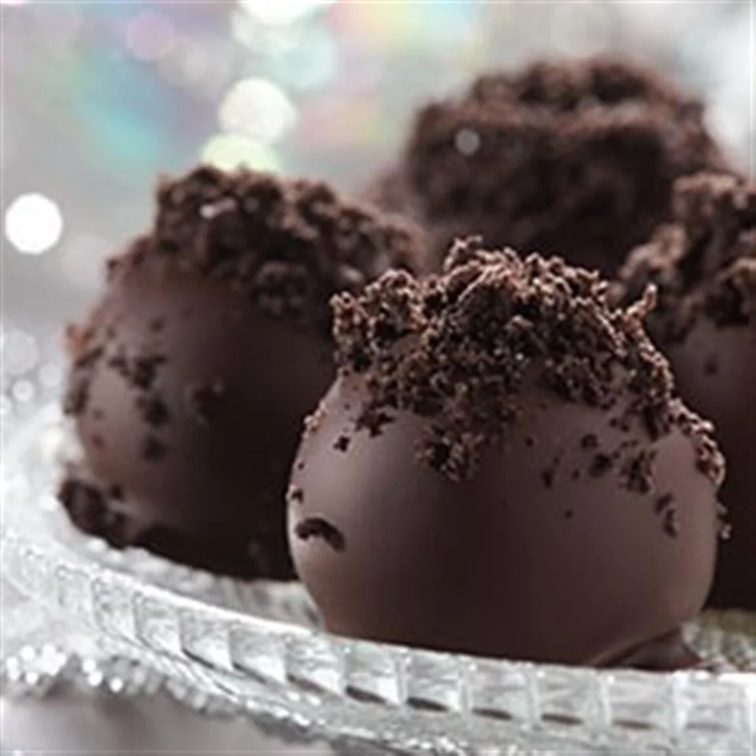

Oreo Cookie Balls

Description
Can't decide between cookies and confections? You don't have to! These chocolate-covered cookie balls feature a filling of cream cheese and crushed cookies.
Ingredients
- 1 8 oz package cream cheese, softened
- 36 Oreo Cookies, finely crushed
- 16 oz semi-sweet baking chocolate, melted
Steps
- Mix cream cheese and cookie crumbs until well blended.
- Shape into 48 (1-inch) balls. Freeze 10 min. Dip balls in melted chocolate; place in single layer in shallow waxed paper-lined pan.
- Refrigerate 1 hour or until firm.
Home